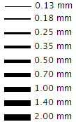

Additional line width options are available to control the appearance of lines and symbols in NX. All commands and preferences that contain the Width or Line Width option to define the line or symbol now provide these options.

The original options of Thin, Normal, and Thick are represented by the 0.13 mm, 0.18 mm, and 0.25 mm options, respectively.
Per industry or company standards, more than three line widths may be required when annotating a model or drawing. Varying line widths let you emphasize or de-emphasize geometry and symbols as needed.
The width options are available in every dialog box in Drafting and PMI that contain a Width or Line Width option to define the size of the line or symbol.